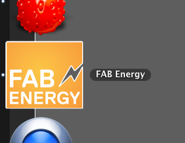

For the Interface Programming assignment I create an interface for my FAB Energy final project.
THE FINAL RESULT
THE PROGRAMMING
The small app is written in Processing. The serial interface with the network is done using the Serial library. The data is published to Pachube using the EEML (Extended Environments Markup Language) that uses the XML data modeling structure, this is implemented using the EEML library . The GUI is based on the ControlP5 library.
The app is based on diferent modules.
SCREEN SHOTS
SOURCE
APP DOWNLOAD